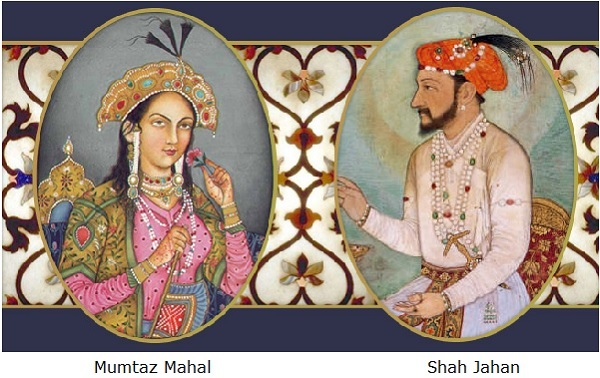

- It took 22 long years to build the Taj Mahal (from 1623-53)
- About 28 types of precious and semi-precious stones were used for adorning the Taj and they were sourced from Tibet, China, Sri Lanka and some parts of India.
Taj Mahal (initially named Rauza-i-Munavvara, 'the Illumined Tomb') is one of the most iconic contributions to the landscape of architecture by the Mughals. Its construction was commissioned by Shah Jahan in 1632 as the burial site for his wife, Mumtaz Mahal. The Taj Mahal was built on land bought from a high-ranking noble. It is situated next to the river Jamuna in the city of Agra, India. The responsibility of planning and building the monument was given to the architects, Ustad Ahmad Lahauri and Mir Abdul Karim with Makramat Khan as the administrator. Across the world, the Taj Mahal is understood to be symbolic of undying love. Prince Khurram (the future Shah Jahan) succeeded his father, Jahangir as the Emperor.
Like many parts of Northern India, the best time of year to visit Agra is between October and February, avoiding the scorching heat of summer and the monsoon rains. Regardless of the time of year, make sure your trip to Agra doesn't fall on a Friday when the Taj Mahal is closed for religious reasons.
By Bus:
If you're looking for the cheapest way to get from Delhi to Agra,
the bus is your best option. The company RedBus shows you
itineraries for all of the different bus companies and lets you
purchase tickets directly from their website.
By Car:
Driving your own vehicle from Delhi to Agra is only for those with
ample experience driving in India. If you aren't familiar with
India's driving laws—or drivers' tendencies to disregard those
laws—then driving your own vehicle is the most stressful and unsafe
option for travel. However, if the train or bus is too much of a
hassle, hiring a private car or taxi is the easiest option for
getting to the Taj Mahal.
By Train:
The most popular way of getting from Delhi to Agra is by train. It's
possible to visit the Taj Mahal in a day from Delhi if you catch the
right trains, the fastest of which get you from city to city in two
hours.
There are several accommodation options available near the Taj Mahal in Agra, India. These include luxury hotels, budget hotels, and guesthouses. Some popular options include the Oberoi Amarvilas, the Taj View Hotel, and the Hotel Clarks Shiraz. These accommodations offer varying levels of luxury and amenities, so it is recommended to research and compare the options before making a reservation.

Taj Mahal was one of the most beautiful places I have ever seen.
The architecture is stunning and the history is fascinating. It's
truly a must-visit destination in India.
~ Bhavin Modha
More....